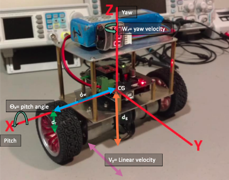

Lab 2: Mathematical Modeling I¶
Introduction¶
Welcome to the second session of the ES3011 experimental labs.
-
Mathematical modeling of basic dynamical systems
-
Mathematical modeling of self-balancing robot system
Learning Outcomes¶
You should be able to:
- Understand and describe the dynamical system using mathematically using differential equations
- Convert the differential equations to state-space model form by hand and using MATLAB functionality
1. Mathematical Modeling of Basic Dynamical Systems¶
In this section, you will develop mathematical models for basic dynamical systems considered in control systems such as the mass-spring-damper and the DC motor. These models will then be put into state-space representation which will be used in future lab sessions for simulation and analysis.
Instructions:¶
In this lab instruction sheet,
- Review the MATLAB Intro section
- Complete problems I (Mass-spring-damper) and IV (Motor position)
2. Mathematical Modeling of the Self-Balancing Robot¶

ADD MORE INFORMATION HERE ON MODELING THE ROBOT DYNAMICS